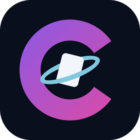

CartaVerse
Politique de confidentialité
Dernière mise à jour : novembre 2026
1. Responsable du traitement
CartaVerse est une application mobile éditée par une micro-entreprise. Le responsable du traitement en est le titulaire : communiqué dès l'immatriculation ; adresse : communiqué dès l'immatriculation. Son identité complète figure dans les Mentions légales ; il est joignable à l'adresse indiquée au paragraphe 9.
L'application s'appuie sur un serveur — Supabase, hébergé dans l'Union européenne — pour la gestion des comptes et la fourniture du catalogue. Une partie de vos données est donc conservée sur votre appareil, et une autre sur ce serveur : le paragraphe 2 dit laquelle est où.
Le service est proposé en France, avec un compte à partir de 15 ans. Le catalogue est consultable sans compte.
2. Données collectées, et où elles se trouvent
a) Sur votre appareil, dans une base de données chiffrée (SQLCipher, AES-256) :
- Cartes ajoutées à votre collection (nom, numéro, extension, condition, langue, quantité, variante, gradation, inventaire, rareté)
- Decks créés et cartes associées
- Préférences de l'application (TCG actif, devise, thème)
- Clé de chiffrement de la base, dans le trousseau sécurisé de l'appareil (Android Keystore)
Ces données-là ne sont jamais transmises à notre serveur : votre collection reste sur votre appareil. Une seule exception, et seulement sur votre geste : « Partager par lien » (ci-dessous).
b) Sur notre serveur, rattachées à votre compte :
- Adresse e-mail et identifiant de compte
- État de votre abonnement
- Codes de secours du second facteur, et le journal de leurs tentatives d'utilisation
- Si vous utilisez « Partager par lien » : une copie des cartes que vous choisissez de partager (nom, extension, numéro, langue, état, variante, quantité, image, et valeur si vous incluez les prix), le nom affiché que vous choisissez, et la durée du partage. Ni votre adresse e-mail, ni vos prix d'achat, ni vos notes n'en font partie.
- Si vous proposez ou recevez un échange : les cartes demandées et offertes, les noms affichés, le message et la réponse.
- Les signalements que vous envoyez.
- Si vous écrivez au support : le sujet, votre message, la carte concernée le cas échéant, une capture d'écran si vous en joignez une, et des informations techniques (version de l'application, système et sa version, modèle d'appareil, langue). Rien de votre collection, aucun identifiant publicitaire.
c) Chez Google, par le moteur de reconnaissance de texte utilisé pour le scan : des données de fonctionnement, décrites au paragraphe 4.
3. Ce qui ne quitte jamais votre appareil
Les photos prises pour scanner une carte sont analysées sur l'appareil. Elles ne sont envoyées à personne, et la capture est supprimée aussitôt le traitement terminé.
Cela vaut pour les images, et seulement pour elles : le moteur de reconnaissance transmet par ailleurs à Google des données de fonctionnement, qui ne contiennent aucune image. Ce sont deux choses distinctes, et le paragraphe 4 décrit la seconde.
4. Destinataires et services tiers
Google — moteur de reconnaissance de texte (ML Kit).
À chaque utilisation du scan, ML Kit transmet à Google des données de diagnostic et d'usage : informations d'appareil (fabricant, modèle, version et build du système), accélérateurs matériels disponibles, nom de paquet et version de l'application, métriques de latence et de performance, configuration des appels (format et résolution d'image), codes d'erreur et types d'événements. Sur Android s'y ajoutent des identifiants par installation, à fin de diagnostic. Dans les termes de Google, ces données sont chiffrées en transit et ne sont pas transférées à des tiers. Cette collecte ne peut pas être désactivée, et elle ne porte pas sur les images.
OVH — envoi des courriels du support.
Quand vous écrivez au support, votre demande nous est transmise par courriel, et un accusé de réception vous est envoyé, par le service de messagerie d'OVH (France).
RevenueCat — gestion de l'abonnement.
Si l'abonnement est activé dans la version que vous utilisez, ouvrir l'écran d'abonnement transmet à RevenueCat votre identifiant de compte et l'état de vos achats. Tant que l'abonnement n'est pas activé, ce service n'est jamais contacté.
Sources de données publiques, interrogées par votre appareil pour afficher les cartes et les prix :
- TCGdex (api.tcgdex.net) — cartes, extensions et prix Pokémon
- Scryfall (api.scryfall.com, cards.scryfall.io) — données et visuels Magic: The Gathering
- YGOProDeck (db.ygoprodeck.com) — données et visuels Yu-Gi-Oh!
- Lorcast (api.lorcast.com) — extensions et prix Disney Lorcana
- Lorcana-API (api.lorcana-api.com) — recherche Disney Lorcana
- OPTCGAPI (www.optcgapi.com) — données One Piece Card Game
- PokémonTCG.io (images.pokemontcg.io) — visuels Pokémon de repli
- PikaQian (images.pikaqian.com) — visuels des cartes en chinois
- Yugipedia (yugipedia.com) — impressions par langue, noms et visuels Yu-Gi-Oh! (contenus sous licence CC BY-SA 4.0)
- RockRoller (yugioh-api.rockroller.xyz) — catalogue Yu-Gi-Oh!
- TCGplayer (tcgplayer-cdn.tcgplayer.com) — visuels de cartes
- Frankfurter (api.frankfurter.dev) — taux de change des devises
Les personnes à qui vous donnez le lien ou le code d'un partage — et quiconque le reçoit d'elles — voient, dans CartaVerse, la copie partagée et le nom affiché. Aucune page web ne la montre.
Ces requêtes ne contiennent que les identifiants des cartes ou des extensions que vous consultez. Aucune donnée de compte ne leur est transmise ; votre adresse IP leur est en revanche visible, comme pour tout site que votre appareil contacte.
Sources que nous relevons nous-mêmes et servons depuis notre serveur — votre appareil ne les contacte pas :
- TCGCSV (tcgcsv.com) — prix issus des relevés TCGplayer
- PikaQian (pikaqian.com) — catalogue des cartes en chinois
- Guardian TCG (guardiantcg.app) — prix des cartes en chinois
- Limitless (limitlesstcg.com) — decks des tournois récents
Les polices de caractères sont embarquées dans l'application : elles ne sont téléchargées nulle part au premier lancement.
Transferts hors Union européenne. Notre serveur est hébergé dans l'Union européenne. Google et RevenueCat sont en revanche établis aux États-Unis : les données décrites ci-dessus qui leur sont destinées y sont transférées, sur le fondement des garanties prévues par leurs propres conditions. Les sources de données publiques, elles, voient votre adresse IP depuis leurs pays respectifs.
Data by Guardian TCG — https://guardiantcg.app
5. Finalités et bases légales
Chaque usage a sa finalité et son fondement juridique :
- Gérer votre collection, afficher les cartes et les prix, calculer la valeur estimée, tenir votre compte et votre abonnement — exécution du contrat qui nous lie (article 6.1.b du RGPD).
- Sécuriser l'accès à votre compte : second facteur, codes de secours, journal de leurs tentatives d'utilisation — intérêt légitime à protéger les comptes (article 6.1.f).
- Télémétrie du moteur de reconnaissance : diagnostic et analyse d'usage de ce moteur, par Google et pour son propre compte — intérêt légitime au fonctionnement de la bibliothèque qui rend le scan possible (article 6.1.f). Cette collecte n'est pas désactivable par l'application.
- Partager par lien et proposer des échanges, à votre demande — exécution du contrat (article 6.1.b). Les signalements et la limite de propositions par jour servent à prévenir les abus — intérêt légitime (article 6.1.f).
- Répondre à vos demandes au support — exécution du contrat (article 6.1.b).
- Traiter vos demandes d'exercice de droits — obligation légale (article 6.1.c).
Aucune donnée n'est utilisée à des fins publicitaires, ni vendue, ni partagée avec un courtier de données. Aucune décision automatisée produisant des effets juridiques à votre égard n'est prise, et il n'y a pas de profilage.
6. Durée de conservation
Sur votre appareil : indéfiniment, jusqu'à ce que vous les supprimiez depuis Réglages → Confidentialité → Supprimer mes données, ou jusqu'à la désinstallation de l'application.
Sur notre serveur : aussi longtemps que votre compte existe. Sa suppression est immédiate et se fait depuis l'application (paragraphe 7).
Demandes au support et captures jointes : aussi longtemps que votre compte existe ; elles sont effacées avec lui.
Partages : jusqu'à ce que vous les arrêtiez, jusqu'à leur expiration (7 jours, 30 jours ou sans limite, à votre choix) ou jusqu'à la suppression de votre compte. Propositions d'échange : 90 jours après leur réponse (ou après leur envoi si elles restent sans réponse), ou jusqu'à la suppression du compte de l'une des deux parties.
Dans nos sauvegardes : au plus 60 jours. Une suppression demandée est donc effective immédiatement sur le service, et complète — copies de sauvegarde comprises — dans un délai maximal de 90 jours. Nous ne prétendons pas faire disparaître une archive plus vite qu'elle n'expire.
7. Vos droits (RGPD)
Conformément au Règlement Général sur la Protection des Données, vous disposez des droits suivants :
- Droit d'accès : toutes vos données de collection sont visibles dans l'application.
- Droit à la portabilité : exportez votre collection au format CSV depuis Réglages → Données → Exporter.
- Droit de rectification : modifiez vos cartes directement dans l'application.
- Droit à l'effacement : voir ci-dessous, car ce bouton ne fait pas tout.
- Droit à la limitation du traitement et droit d'opposition à un traitement fondé sur notre intérêt légitime — écrivez-nous, nous examinons la demande et répondons dans le même délai.
Deux gestes distincts, et il vaut mieux savoir lequel vous voulez.
- « Supprimer mes données » (Réglages → Confidentialité) vide la base locale de votre appareil : collection, decks, préférences. Votre compte est conservé, et vous restez connecté.
- « Supprimer mon compte » (Réglages → Compte) supprime le compte lui-même, immédiatement : adresse e-mail, abonnement, codes de secours du second facteur, scans contribués et leurs images. L'appareil est effacé dans le même mouvement.
Vous pouvez aussi demander la suppression du compte par e-mail, à l'adresse du paragraphe 9 : la demande est alors traitée dans le délai d'un mois prévu par le règlement.
Ce que la suppression du compte ne fait pas :
- elle ne résilie pas votre abonnement, qui se gère depuis votre compte Google Play ;
- un autre appareil resté déconnecté est nettoyé à sa prochaine ouverture, pas avant.
Et si vous supprimez seulement vos données, deux éléments sont conservés sur le serveur, pour des raisons précises :
- l'état de votre abonnement, faute de quoi l'effacement permettrait de réinitialiser indéfiniment les quotas de la formule gratuite ;
- les codes de secours du second facteur et le journal de leurs tentatives, qui sont des éléments de sécurité du compte tant que celui-ci existe.
Ces deux exceptions disparaissent avec le compte lui-même — c'est bien la différence entre les deux gestes.
Réclamation. Si notre réponse ne vous satisfait pas, vous pouvez saisir la Commission nationale de l'informatique et des libertés (CNIL), 3 place de Fontenoy, 75007 Paris — www.cnil.fr.
8. Sécurité
La base de données locale est chiffrée avec SQLCipher (AES-256), et sa clé est conservée dans le trousseau sécurisé de votre appareil (Android Keystore). Les échanges avec notre serveur et avec les sources de données passent par HTTPS. La double authentification (2FA TOTP) est disponible, et peut être exigée à chaque ouverture de session.
9. Contact
Pour toute question relative à cette politique, à vos données personnelles, ou pour demander la suppression de votre compte, contactez-nous à : support@cartaverse.fr
Privacy policy
This English translation is provided for convenience. Only the French version is legally binding.
Last updated: November 2026
1. Data controller
CartaVerse is a mobile app published by a micro-enterprise. The data controller is its owner: to be provided upon registration; address: to be provided upon registration. Their full identity is given in the Legal notice; they can be reached at the address given in section 9.
The app relies on a server — Supabase, hosted in the European Union — for account management and for providing the catalogue. Part of your data is therefore kept on your device, and another part on this server: section 2 says which is where.
The service is offered in France, with an account from the age of 15. The catalogue can be browsed without an account.
2. Data collected, and where it is
a) On your device, in an encrypted database (SQLCipher, AES-256):
- Cards added to your collection (name, number, set, condition, language, quantity, variant, grading, inventory, rarity)
- Decks you create and their cards
- App preferences (active TCG, currency, theme)
- The database encryption key, in the device’s secure keystore (Android Keystore)
This data is never sent to our server: your collection stays on your device. There is one exception, and only when you act: “Share by link” (below).
b) On our server, linked to your account:
- Email address and account identifier
- Status of your subscription
- Recovery codes for your second factor, and the log of attempts to use them
- If you use “Share by link”: a copy of the cards you choose to share (name, set, number, language, condition, variant, quantity, image, and value if you include prices), the display name you choose, and the duration of the share. Neither your email address, nor your purchase prices, nor your notes are included.
- If you propose or receive a trade: the cards asked for and offered, the display names, the message and the answer.
- The reports you send.
- If you write to support: the topic, your message, the card concerned where applicable, a screenshot if you attach one, and technical information (app version, operating system and its version, device model, language). Nothing from your collection, no advertising identifier.
c) At Google, through the text recognition engine used for scanning: operating data, described in section 4.
3. What never leaves your device
Photos taken to scan a card are analysed on the device. They are sent to no one, and the capture is deleted as soon as processing ends.
This applies to images, and only to them: the recognition engine separately sends Google operating data, which contains no image. These are two different things, and section 4 describes the second.
4. Recipients and third-party services
Google — text recognition engine (ML Kit).
Each time the scan is used, ML Kit sends Google diagnostic and usage data: device information (manufacturer, model, operating system version and build), available hardware accelerators, app package name and version, latency and performance metrics, call configuration (image format and resolution), error codes and event types. On Android, per-installation identifiers are added for diagnostic purposes. In Google’s terms, this data is encrypted in transit and is not transferred to third parties. This collection cannot be turned off, and it does not include images.
OVH — sending support emails.
When you write to support, your request is forwarded to us by email, and an acknowledgement is sent to you, through the email service of OVH (France).
RevenueCat — subscription management.
If the subscription is enabled in the version you use, opening the subscription screen sends RevenueCat your account identifier and the status of your purchases. As long as the subscription is not enabled, this service is never contacted.
Public data sources, queried by your device to show cards and prices:
- TCGdex (api.tcgdex.net) — Pokémon cards, sets and prices
- Scryfall (api.scryfall.com, cards.scryfall.io) — Magic: The Gathering data and artwork
- YGOProDeck (db.ygoprodeck.com) — Yu-Gi-Oh! data and artwork
- Lorcast (api.lorcast.com) — Disney Lorcana sets and prices
- Lorcana-API (api.lorcana-api.com) — Disney Lorcana search
- OPTCGAPI (www.optcgapi.com) — One Piece Card Game data
- PokémonTCG.io (images.pokemontcg.io) — fallback Pokémon artwork
- PikaQian (images.pikaqian.com) — artwork of Chinese cards
- Yugipedia (yugipedia.com) — printings by language, Yu-Gi-Oh! names and artwork (content licensed under CC BY-SA 4.0)
- RockRoller (yugioh-api.rockroller.xyz) — Yu-Gi-Oh! catalogue
- TCGplayer (tcgplayer-cdn.tcgplayer.com) — card artwork
- Frankfurter (api.frankfurter.dev) — currency exchange rates
The people you give the link or code of a share to — and anyone who receives it from them — see the shared copy and the display name in CartaVerse. No web page shows it.
These requests only contain the identifiers of the cards or sets you look at. No account data is sent to them; your IP address is, however, visible to them, as for any site your device contacts.
Sources we collect ourselves and serve from our server — your device does not contact them:
- TCGCSV (tcgcsv.com) — prices from TCGplayer listings
- PikaQian (pikaqian.com) — catalogue of Chinese cards
- Guardian TCG (guardiantcg.app) — prices of Chinese cards
- Limitless (limitlesstcg.com) — decks from recent tournaments
Fonts are bundled with the app: they are not downloaded from anywhere at first launch.
Transfers outside the European Union. Our server is hosted in the European Union. Google and RevenueCat, however, are based in the United States: the data described above intended for them is transferred there, on the basis of the safeguards provided by their own terms. Public data sources see your IP address from their respective countries.
Data by Guardian TCG — https://guardiantcg.app
5. Purposes and legal bases
Each use has its purpose and legal basis:
- Managing your collection, showing cards and prices, computing the estimated value, running your account and subscription — performance of the contract between us (article 6.1.b GDPR).
- Securing access to your account: second factor, recovery codes, log of attempts to use them — legitimate interest in protecting accounts (article 6.1.f).
- Telemetry of the recognition engine: diagnostics and usage analysis of that engine, by Google and on its own behalf — legitimate interest in the operation of the library that makes scanning possible (article 6.1.f). The app cannot turn this collection off.
- Sharing by link and proposing trades, at your request — performance of the contract (article 6.1.b). Reports and the daily limit on proposals serve to prevent abuse — legitimate interest (article 6.1.f).
- Answering your support requests — performance of the contract (article 6.1.b).
- Handling your requests to exercise your rights — legal obligation (article 6.1.c).
No data is used for advertising, sold, or shared with a data broker. No automated decision producing legal effects concerning you is made, and there is no profiling.
6. Retention period
On your device: indefinitely, until you delete it from Settings → Privacy → Delete my data, or until the app is uninstalled.
On our server: as long as your account exists. Deleting it is immediate and is done from the app (section 7).
Support requests and attached screenshots: as long as your account exists; they are deleted with it.
Shares: until you stop them, until they expire (7 days, 30 days or no limit, as you choose) or until your account is deleted. Trade proposals: 90 days after their answer (or after they were sent if they remain unanswered), or until the account of either party is deleted.
In our backups: at most 60 days. A requested deletion is therefore effective immediately on the service, and complete — backup copies included — within at most 90 days. We do not claim to make an archive disappear faster than it expires.
7. Your rights (GDPR)
Under the General Data Protection Regulation, you have the following rights:
- Right of access: all your collection data is visible in the app.
- Right to data portability: export your collection as CSV from Settings → Data → Export.
- Right to rectification: edit your cards directly in the app.
- Right to erasure: see below, because that button does not do everything.
- Right to restriction of processing and right to object to processing based on our legitimate interest — write to us, we review the request and reply within the same time limit.
Two separate actions, and it is better to know which one you want.
- “Delete my data” (Settings → Privacy) empties your device’s local database: collection, decks, preferences. Your account is kept, and you stay signed in.
- “Delete my account” (Settings → Account) deletes the account itself, immediately: email address, subscription, second-factor recovery codes, contributed scans and their images. The device is wiped at the same time.
You can also request deletion of your account by email, at the address in section 9: the request is then handled within the one month provided by the regulation.
What account deletion does not do:
- it does not cancel your subscription, which is managed from your Google Play account;
- another device that stayed offline is cleaned the next time it opens, not before.
And if you only delete your data, two items are kept on the server, for specific reasons:
- the status of your subscription, otherwise erasure would allow the free plan quotas to be reset indefinitely;
- the second-factor recovery codes and the log of attempts, which are security elements of the account as long as it exists.
These two exceptions disappear with the account itself — that is precisely the difference between the two actions.
Complaint. If our answer does not satisfy you, you can refer the matter to the French data protection authority (Commission nationale de l’informatique et des libertés, CNIL), 3 place de Fontenoy, 75007 Paris — www.cnil.fr.
8. Security
The local database is encrypted with SQLCipher (AES-256), and its key is kept in your device’s secure keystore (Android Keystore). Exchanges with our server and with data sources use HTTPS. Two-factor authentication (TOTP 2FA) is available, and can be required at each sign-in.
9. Contact
For any question about this policy or your personal data, or to request deletion of your account, contact us at: support@cartaverse.fr